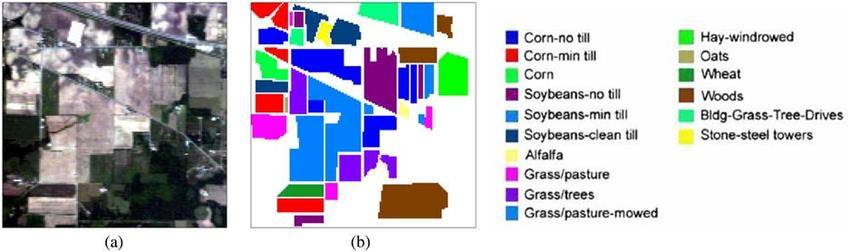
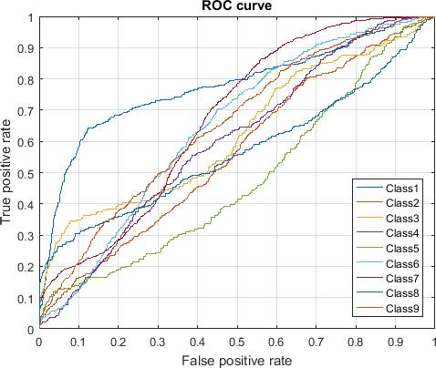

Publications · ACM ICCA 2020
An Improved Class-wise Principal Component Analysis Based Feature Extraction Framework for Hyperspectral Image Classification
Proceedings of the International Conference on Computing Advancements (ICCA) 2020, Dhaka, 10–12 January 2020. ACM, Article 48, pp. 1–6.
Ordinary PCA on a hyperspectral image throws away class structure and hurts accuracy. Run PCA separately inside each class, take sixteen components from each, and stack them back together — accuracy jumps from 89.02% to 95.44%.
At a glance
- Class-wise PCA + SVM95.44 %Overall accuracy — the proposed method
- Baseline SVM, all bands89.02 %All 220 spectral bands, no reduction
- Plain PCA + SVM85.75 %21 components — worse than doing nothing
- Features kept16 per classChosen by maximum average variance
The problem in one sentence
The Hughes phenomenon
Also called the curse of dimensionality.
A hyperspectral image stacks hundreds of contiguous spectral bands. Adjacent bands are highly correlated, so most of that data is redundant — and with far more bands than training pixels, the classifier generalises poorly and the misclassification rate climbs.
The dataset
Indian Pines, captured by the AVIRIS sensor over north-western Indiana.
- 145×145Pixels
- 220Spectral bands
- 0.4–2.5 µmWavelength range
- 16 → 9Ground-truth classes used
The proposed framework
Four steps, and the whole idea is in the first one.
Split by class
Partition the image’s pixels into nine sets, one per ground-truth class, instead of treating the scene as one pool.
PCA inside each class
Run PCA separately on every partition, so the components describe variance within a class rather than across the whole scene.
Take 16 from each
Use the cumulative eigenvalue sum and the maximum average value to pick sixteen components per class.
Merge, then classify
Stack the nine reduced sets vertically — same pixel count, 16 features — and classify with a one-vs-rest SVM using an RBF kernel.
Results
Holdout cross-validation, identical splits for all three approaches: 50% training, 30% validation, 20% test.
Overall accuracy — three approaches
One-vs-rest SVM with an RBF kernel throughout; c and σ were grid-searched over 2−6 to 26 for each approach.
Data table
| Approach | Best c (2^) | Best σ (2^) | Overall accuracy |
|---|---|---|---|
| SVM, all bands | 5 | 4 | 89.02% |
| PCA + SVM | 1 | 2 | 85.75% |
| Class-wise PCA + SVM | 3 | 2 | 95.44% |
Per-class accuracy across all nine classes
Class-wise PCA lifts the crop classes that the baseline struggled with — Corn-notill reaches 100% — while giving some ground on Hay-windrowed and Grass-trees. The axis starts at 60%, not zero.
- SVM, all 220 bands
- PCA + SVM
- Class-wise PCA + SVM
Data table
| Class | Train px | Test px | SVM | PCA | Class-wise PCA |
|---|---|---|---|---|---|
| Corn-notill | 714 | 428 | 83.14% | 75.87% | 100.00% |
| Corn-mintill | 415 | 249 | 76.20% | 68.07% | 91.71% |
| Grass-pasture | 241 | 145 | 91.67% | 93.81% | 93.97% |
| Grass-trees | 365 | 219 | 99.08% | 98.63% | 90.05% |
| Hay-windrowed | 239 | 143 | 100.00% | 98.95% | 75.55% |
| Soybean-notill | 486 | 292 | 85.17% | 76.92% | 95.71% |
| Soybean-mintill | 1227 | 736 | 88.42% | 84.72% | 99.24% |
| Soybean-clean | 296 | 178 | 84.75% | 73.10% | 97.19% |
| Woods | 632 | 379 | 99.21% | 98.42% | 90.61% |
| Overall | 89.02% | 85.75% | 95.44% |
Reading the errors
Two observations the paper draws from the ROC curves and the misclassification maps.
- Training data helps
The two best-separated classes are the two largest
Corn-notill has the highest area under the curve at 0.78 and Soybean-mintill the second highest — and they hold 714 and 1,227 training pixels respectively, the two biggest training sets in the study.
- Two perfect classes
100% accuracy, one per method
Hay-windrowed has no misclassified pixels under the plain SVM; Corn-notill has none under class-wise PCA.
Figures from the paper


Takeaway
Takeaway
Dimensionality reduction is not automatically a win: plain PCA on this scene dropped accuracy by more than three points below simply keeping all 220 bands.
Preserving class structure through the reduction is what turns it into a win — a 6.4-point gain over the full-band baseline, from 16 features per class instead of 220 bands.